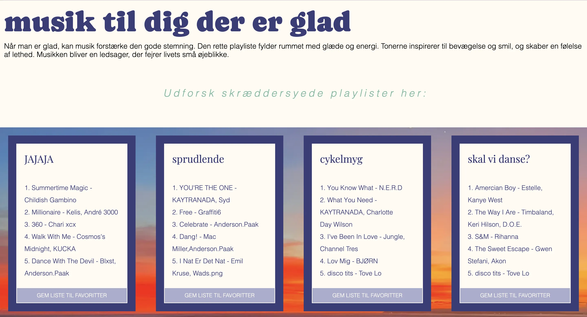
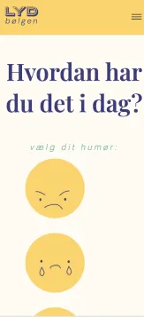

03
UX/UI
TEMAET
I dette tema blev vi introduceret til User Experience Design (UX) og brugergrænseflader (UI). Kort sagt skulle vi lære hvor stor betydning af begge dele har for et vellykket site. Samspillet mellem at en bruger bliver fanget af sitet og at det er brugervenligt er ekstrem vigtig.
Vi brugte tid på at researche og idéudvikle designs og forskellige kombinationer. Vi udarbejdede grafiske analyser, user-stories og sketches. Vi lærte også at få indsigter udefra, dette gjorde vi ved at udføre af forskellige tests bl.a. tænkehøjt-test, 5-second test og lighthouse-test.
OPGAVEN
Dette temas opgave var at udarbejde et website med udgangspunkt i et selvvalgt emne. Jeg valgte at lave et site der hed “LYDbølgen”, som er lavet til en bred målgruppe. Jeg ønskede at lave noget de fleste ville kunne få brug af, samtidig med, at det var noget jeg personligt interesserede mig rigtig meget for.
Da vi startede opgaven gjorde jeg stort brug af designprogrammet Figma. Det hjalp mig i min design-process, og jeg startede med at lave en klikbar prototype, som var et perfekt udgangspunkt, inden jeg skulle påbegynde kodningen i VS-code. Jeg lavede moodboards, research og interviews.
UDFORDRINGER
Min største udfordring ved processen var klart at fange grid-opsætningerne, der flere gange drillede mig. Til sidst var det en stor forløsning at få det til at virke, og efterfølgende har jeg flere gange vænnet tilbage til sitet for at genbruge de forskellige grid-layouts.
En anden udfordring jeg stødte på var at gøre min forside responsivt, det grid system jeg havde lavet med min følelses-bar, var svær at få til at se pæn ud på mobile-site. Derfor er jeg heller ikke endt med at være helt tilfreds med den endelige løsning på mobil.
MIN LØSNING :
"03 - UX/UI - Emnesite"